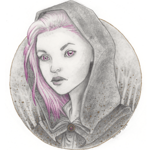

Who is Melyanna?
I am an old cat lady who spends way too much time daydreaming.
I work in the video games industry and enjoy my job very much.
When I am not working, I spend my time playing videogames, table-top games (mostly RPGs, but board games too), reading all sorts of genres, and creating mediocre art.
My all time favourite films and TV series are: Battlestar Galactica, Star Trek, Firefly, Barry Lyndon and Blade Runner.
I am vegetarian and my favourite foods are pizza (how original) and French fries.
I drink way too much tea and my kettle is my best friend.
I live with my partner Rodolfo (aka: Gnagnulo) and five rescued cats: Penelope, Sgorgo, Polifemo, Psycho and Fluffy.
Italiano
Pubblico su questo spazio tutti i miei lavori creati con Twine 2.0, al momento tutti in fase di lavorazione.
- Le avventure di Maru e Mara. Mini gioco di ruolo.
- Il libro misterioso. Esperimento di libro interattivo.
- Zombie City. Gioco di ruolo horror ispirato a Urban Dead di Kevan Davis.